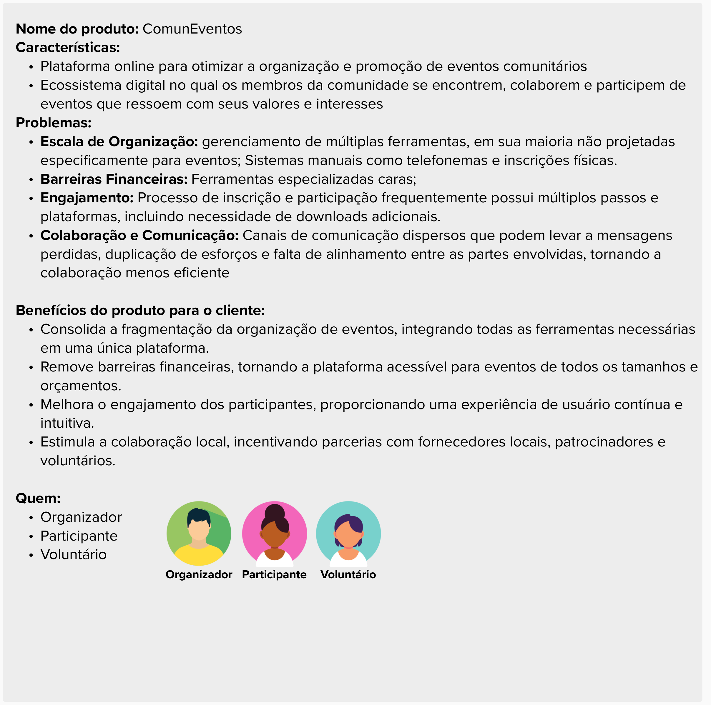
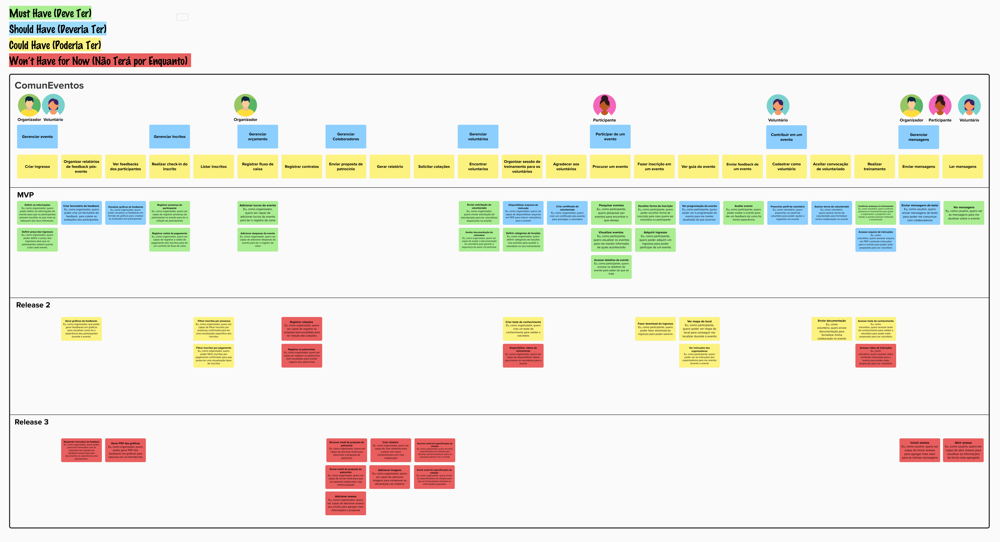

User Story Mapping
Introdução
É proposto pelo professor George Marsicano a criação do User Story Mapping (USM) relacionado ao estudo de caso "ComunEventos" pela facção Insurgentes Estelares.
Resumo

Figura 1: Breve resumo do produto.
Tabela de Histórias
Para facilitar a leitura do mapa, devido em imagem ser difícil visualizar, transformamos o User Story Mapping em na Tabela 1.
| Usuário | Atividade | Jornada do Usuário | Título da Tarefa do Usuário | História do Usuário |
|---|---|---|---|---|
| Organizador e voluntário | Gerenciar evento | Criar ingresso | Definir as informações | Eu, como organizador, quero poder definir as informações do evento para que os participantes possam escolher as que mais se adequam aos seus interesses. |
| Definir preço dos ingressos | Eu, como organizador, quero poder definir o preço dos ingressos para que os participantes saibam quanto custa cada evento | |||
| Organizar relatórios de feedback pós-evento | Criar formulário de feedback | Eu, como organizador, quero poder criar um formulário de feedback para coletar as avaliações dos participantes | ||
| Gerar gráficos de feedbacks | Eu, como organizador, que poder gerar feedbacks em gráficos para visualizar como foi a experiência dos participantes durante o evento | |||
| Responder formulário de feedback | Eu, como organizador, quero poder preencher formulário com as respostas das sessões de feedback presenciais para documentar as experiências dos participantes | |||
| Ver feedbacks dos participantes | Visualizar gráficos de feedbacks | Eu, como organizador, quero poder visualizar os feedbacks em formato de gráficos para analisar as avaliações dos participantes | ||
| Gerar PDF dos gráficos | Eu, como organizador, quero poder gerar PDF dos feedbacks em gráficos para salvá-las em um formato fixo | |||
| Gerenciar Inscritos | Realizar check-in do inscrito | Registrar presença de participante | Eu, como organizador, quero ser capaz de registrar presença de participante no evento para ter a relação de participantes | |
| Registrar coleta de pagamento | Eu, como organizador, quero ser capaz de registrar a coleta do pagamento dos inscritos para ter um controle do fluxo de caixa | |||
| Listar inscritos | Filtrar inscritos por presença | Eu, como organizador, quero ser capaz de filtrar inscritos por presença confirmada para ter uma visualização especifica dos inscritos | ||
| Filtrar inscritos por pagamento | Eu, como organizador, quero poder filtrar inscritos por pagamento confirmado para que possa ter uma visualização tipos de inscritos | |||
| Organizador | Gerenciar orçamento | Registrar fluxo de caixa | Adicionar lucros do evento | Eu, como organizador, quero ser capaz de adicionar lucros do evento para ter o registro de caixa |
| Adicionar despesas do evento | Eu, como organizador, quero ser capaz de adicionar despesas do evento para ter o registro de caixa | |||
| Registrar contratos | Registrar cotações | Eu, como organizador, quero ser capaz de registrar as cotações bem-sucedidas para ter relação das cotações | ||
| Registrar os patrocínios | Eu, como organizador, quero ser capaz de registrar os patrocínios bem-sucedidos para manter registro dos patrocínios | |||
| Gerenciar Colaboradores | Enviar proposta de patrocínio | Escrever email de proposta de patrocínio | Eu, como organizador, quero ser capaz de escrever email para descrever a proposta de patrocínio | |
| Enviar email de proposta de patrocínio | Eu, como organizador, quero ser capaz de enviar email para que um possível colaborador veja minha proposta | |||
| Adicionar anexos | Eu, como organizador, quero ser capaz de adicionar anexos aos emails para agregar mais informações à proposta | |||
| Gerar relatório | Criar relatório | Eu. como organizador, quero ser capaz de criar relatórios para cumprir com meus compromissos com meu colaborador | ||
| Adicionar imagens | Eu, como organizador, quero ser capaz de adicionar imagens para comprovar as declarações do relatório | |||
| Solicitar cotações | Enviar email de especificações de cotação | Eu, como organizador, quero enviar as especificações de cotação para que os fornecedores recebam as informações propostas | ||
| Escrever email de especificações de cotação | Eu, como organizador, quero escrever especificações de cotação para informar aos fornecedores sobre os possíveis ganhos com o evento | |||
| Gerenciar voluntários | Encontrar voluntários | Enviar solicitação de voluntariado | Eu, como organizador, quero enviar solicitação de voluntariado para ter voluntários disponíveis no evento | |
| Avaliar documentação do voluntário | Eu, como organizador, quero ser capaz de avaliar a documentação do voluntário para garantir a segurança de quem vai participar | |||
| Organizar sessão de treinamento para os voluntários | Disponibilizar arquivos de instrução | Eu, como organizador, quero ser capaz de disponibilizar arquivos em PDF para instruir voluntários para o evento | ||
| Definir categorias de funções | Eu, como organizador, quero definir categorias de funções nos eventos para auxiliar o voluntário no seu treinamento | |||
| Criar teste de conhecimento | Eu, como organizador, quero criar um teste de conhecimento para validar o voluntário | |||
| Disponibilizar vídeos de treinamento | Eu, como organizador, quero ser capaz de disponibilizar vídeos para treinar os voluntários para o evento | |||
| Agradecer aos voluntários | Criar certificado de voluntariado | Eu, como organizador, quero criar um certificado pós-evento para prestigiar o voluntário | ||
| Participante | Participar de um evento | Procurar um evento | Pesquisar eventos | Eu, como participante, quero pesquisar por eventos para encontrar o que desejo |
| Visualizar eventos | Eu, como participante, quero visualizar os eventos para me manter informada de quais acontecerão | |||
| Acessar detalhes de evento | Eu, como participante, quero acessar os detalhes do evento para saber do que se trata | |||
| Fazer inscrição em um evento | Escolher forma de inscrição | Eu, como participante, quero poder escolher forma de inscrição para caso queira ser voluntária ou participante | ||
| Adquirir ingresso | Eu, como participante, quero poder adquirir um ingresso para poder participar de um evento | |||
| Fazer download do ingresso | Eu, como participante, quero poder fazer download do ingresso para poder salvá-lo | |||
| Ver guia do evento | Ver mapa do local | Eu, como participante, quero poder ver mapa do local para conseguir me localizar durante o evento | ||
| Ver instruções dos organizadores | Eu, como participante, quero poder ver as instruções dos organizadores para me orientar durante o evento | |||
| Ver programação do evento | Eu, como participante, quero poder ver a programação do evento para me manter atualizado do que ocorrerá | |||
| Enviar feedback de um evento | Avaliar evento | Eu, como participante, quero poder avaliar o evento para dar um feedback de como foi minha experiência | ||
| Voluntário | Contribuir em um evento | Cadastrar como voluntário | Preencher perfil de voluntário | Eu, como voluntário, quero preencher um perfil de voluntário para poder ajudar a organizar um evento |
| Aceitar convocação de voluntariado | Assinar termo de voluntariado | Eu, como voluntário, quero assinar termo de voluntariado para formalizar minha colaboração no evento | ||
Enviar documentação | Eu, como voluntário, quero enviar documentação para formalizar minha colaboração no evento | |||
| Realizar treinamento | Confirmar presença no treinamento | Eu, como voluntário, quero confirmar presença no treinamento para ajudar o organizador a programar com relação a quantas pessoas realizarão o treinamento | ||
| Acessar arquivo de instruções | Eu, como voluntário, quero acessar arquivo em PDF contendo instruções para o evento para poder estar preparado para ser voluntário | |||
| Acessar teste de conhecimento | Eu, como voluntário, quero acessar teste de conhecimento para validar o voluntário para poder estar preparado para ser voluntário | |||
| Acessar vídeo de instruções | Eu, como voluntário, quero acessar vídeo contendo instruções para o evento para poder estar preparado para ser voluntário | |||
| Organizador, voluntário e participante | Gerenciar mensagens | Enviar mensagens | Enviar mensagens de texto | Eu, como usuário, quero enviar mensagens de texto para poder me comunicar com colaboradores |
| Incluir anexos | Eu, como usuário, quero ser capaz de incluir anexos para agregar mais valor para as minhas mensagens | |||
| Ler mensagens | Abrir anexos | Eu, como usuário, quero ser capaz de abrir anexos para visualizar as informações de forma mais agregada | ||
| Ver mensagens | Eu, como usuário, quero ver as mensagens para me atualizar sobre o evento |
Tabela 1: Tabela do mapa de histórias.
Priorização
Para organizar e atualizar o Backlog, realizamos a priorização das histórias de usuário do User Story Mapping utilizando a técnica MoSCoW para determinar a sua prioridade, os critérios utilizados para definir o que seria Must, Should, Could ou Would foram o valor de negócio, a complexidadee e a viabilidade, tendo um maior peso os que possuiam valor de negócio que ajudava a cumprir os objetivos e necessidades mais urgentes do cliente. A execução da técnica pode ser vista na Figura 2.

Figura 2: USM completo.
Mural
Segue abaixo o Mural que possui tudo o que foi apresentado:
Histórico de versão
| Data | Versão | Descrição | Autor |
|---|---|---|---|
| 19/11 | 1.0 | Criação do artefato USM | Gustavo França |
| 22/11 | 1.1 | Atualização do artefato USM | Gustavo França |
| 05/11 | 2.0 | Adição da tabela e correção do USM | Larissa Gomes |